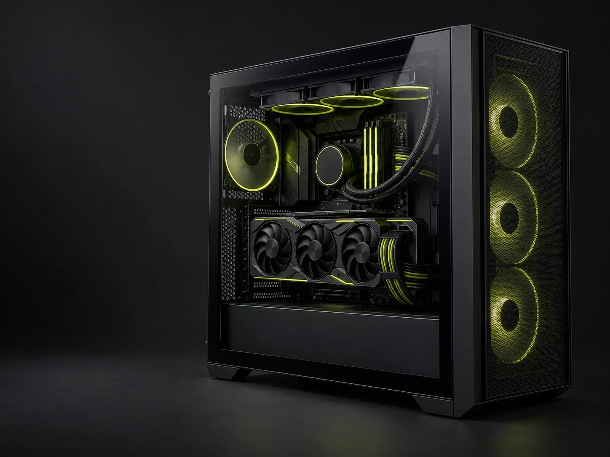

Custom PC building
Component selection, assembly, cooling, and clean cable management — with the way you use your PC in mind.
PC BUILDER / IT TECHNICIAN
I'm Nyi Thu Yein Tun. I build PCs, solve hardware problems, and make technology easier to use. Good parts matter. Getting the details right matters just as much.

01 / WHAT I DO
From choosing compatible parts to finding out why a computer won't start, I enjoy the hands-on work that makes a setup reliable.
Component selection, assembly, cooling, and clean cable management — with the way you use your PC in mind.
System diagnostics and practical problem-solving for PCs and laptops, with clear explanations along the way.
RAM and storage upgrades, operating-system installation, and configuration to help an existing computer work better.
Helping people with computer setup, software, and everyday technical issues. Patient support, in English or Burmese.
02 / ON MY WORKBENCH
I also explore software and game development. These are learning projects I've been working through — a place to practice, experiment, and keep improving.
Exploring how staff, products, customers, and invoices fit together in a practical PHP and MySQL application.
Learning through tank movement, camera controls, and small game mechanics built with Unity and C#.
Exploring a web-based clinic system, including sign-in, database access, and the connection between a frontend and backend.
HOW I THINK
What do you use your computer for? What is getting in your way? A useful solution starts there.
Think through compatibility, assembly, and setup. Small decisions make a difference.
Keep the conversation simple, so people understand their setup and feel comfortable using it.
03 / THE PERSON BEHIND THE PC
PC builder. IT technician. Always learning.
PC building is the work I want to keep getting better at.
With a Computer Science background and a hands-on interest in hardware, I enjoy turning separate parts into a setup that makes sense. I also bring customer-support experience and a patient approach to helping people with technology.
I've helped manage computer classes and configure laptops for students. Making computers accessible and easy to use matters to me as much as getting them to work.
Thoughtful builds.
Practical solutions.
THAT'S HARDWARE HAVEN.